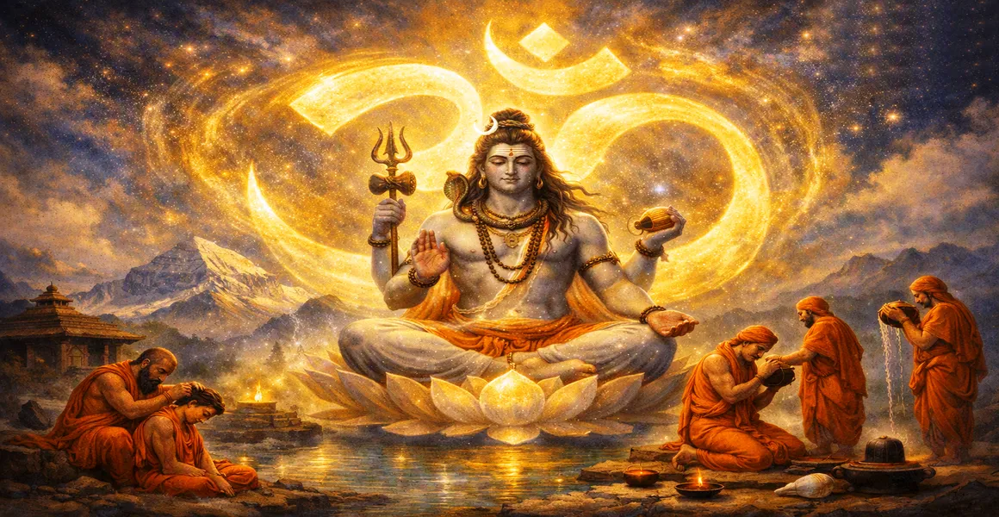

The Pranava in the Form of Shiva
The fourteenth chapter of the Kailasa Samhita reveals the profound identity between the sacred primordial sound Pranava (Om) and the supreme form of Lord Shiva.
Sage Suta explains how Omkar is not merely a mantra, but the living sonic embodiment and supreme essence of Mahadeva.
This chapter guides seekers to realize that every vibration of the universe echoes the divine presence of Lord Shiva.
Chapter 14 Highlights
Pranava as Shiva
Reveals the absolute oneness of the sacred Om symbol with Lord Shiva.
Sonic Embodiment
Explains how cosmic sound vibration constitutes the physical and spiritual form of Mahadeva.
Meditation on Omkar
Teaches the contemplative practice of uniting the breath and mind with Pranava.
Dissolution of Illusion
Shows how internal repetition and absorption in Om destroy worldly ignorance.
Supreme Resonance
Connects the seeker's inner awareness with the eternal heartbeat of Shiva.
Bridge to Idol Worship
Prepares the foundation for exploring the sacred forms and idols of Shiva in Chapter 15.
Core Topics in This Chapter
Cosmic Sound as Divine Form
Before the creation of the universe, the primordial vibration of Pranava echoed through the infinite void, carrying the creative and dissolving power of Shiva.
Every letter and mora of Om represents different cosmic aspects and divine attributes of the Supreme Lord.
The Art of Meditating on Omkar
Seekers are instructed to concentrate their life-breath and mind on the continuous resonance of Pranava within the heart.
Through steady repetition and contemplation, the mental modifications quiet down, revealing the inner light of Shiva.
Overcoming Ignorance Through Pranava
The resonant power of Pranava acts like a blazing fire that burns away the dense thicket of worldly attachments and illusions.
When the mind remains anchored in Om, sorrow and fear dissolve into the vast ocean of divine peace.
The Eternal Resonance of Mahadeva
The chapter illuminates how the sound of Om vibrates through all living beings as the silent heartbeat of Lord Shiva.
Recognizing this cosmic resonance everywhere transforms ordinary perception into continuous worship.
Liberation Through Sound Realization
Sage Suta concludes that one who fully realizes the identity of Pranava and Shiva attains immediate release from mortal bondage.
Such a yogi merges into the supreme silence that underlies all sounds, becoming one with Mahadeva.
Transition to Chapter 15
Having revealed the sonic form of Pranava as Shiva in Chapter 14, Sage Suta introduces Chapter 15, 'The Idol of Shiva for Worship'.
Chapter 15 details the physical forms, lingas, and idols prescribed for the worship of Lord Shiva.
Key Teachings of Chapter 14
Inseparable Unity
Pranava and Lord Shiva are fundamentally one, representing sound and substance.
Primordial Sound
Om is the source of all creation and the eternal voice of Mahadeva.
Heart Meditation
Anchoring the mind in Om dispels inner darkness and confusion.
Illusion Breaker
The resonance of Pranava burns away the bonds of material existence.
Universal Echo
Every living vibration reflects the sacred presence of Lord Shiva.
Supreme Silencegha
Supreme Silence
Realizing sound leads to the ultimate state of silent liberation in Shiva.
Spiritual Reflection
When we chant Om with deep devotion, we are not just uttering a word; we are attuning our entire being to the cosmic heartbeat of Lord Shiva. In that sacred resonance, all noise fades, and supreme peace prevails.
Living the Message of Chapter 14
Begin your daily meditation by mentally chanting Pranava, aligning your breath with the sacred syllable.
Listen to the quiet spaces between sounds, recognizing them as the infinite silence of Mahadeva.
Let the vibration of Om purify your thoughts and guide your actions toward divine grace.
Key Spiritual Concepts
The supreme philosophical truth underlying the sacred sound Om.
Lord Shiva embodied in the form of primordial sound vibration.
Contemplative meditation focused on the syllables and resonance of Om.
The eradication of worldly ailments and ignorance through Pranava.
Dissolution into the universal reality beyond phenomenal existence.
The illuminating transition toward the worship of divine forms in Chapter 15.
Chapter Summary
Kailasa Samhita Chapter 14 presents The Pranava in the Form of Shiva. Unveiling the profound identity between the sacred sound Om and Lord Shiva, this chapter teaches the art of meditating on Omkar to destroy ignorance and attain supreme liberation. It paves the way for Chapter 15, 'The Idol of Shiva for Worship', exploring the sacred forms and lingas of the divine.
Frequently Asked Questions
1. What is the primary subject of Kailasa Samhita Chapter 14?
Chapter 14 explores the profound identity between the sacred primordial sound Pranava (Om) and the supreme form of Lord Shiva.
2. How does Pranava relate to Lord Shiva according to this chapter?
Pranava (Om) is not just a symbol or sound, but the sonic body and essence of Lord Shiva Himself.
3. What are the spiritual benefits of meditating on Pranava?
Meditating on Pranava purifies the mind, awakens inner consciousness, and grants direct communion with Lord Shiva.
4. How does Chapter 14 connect with the preceding chapter?
While Chapter 13 teaches inner renunciation, Chapter 14 provides the supreme object of meditation—Pranava as Shiva—for the liberated mind.
5. What are the spiritual fruits of understanding Chapter 14?
It deepens the seeker's devotion, reveals the cosmic sound vibration of the universe, and leads to ultimate liberation.
6. What is the next chapter for navigation after Chapter 14?
The next chapter for navigation is Chapter 15, titled 'The Idol of Shiva for Worship'.
“The sacred syllable Om is the heartbeat of the cosmos and the living voice of Lord Shiva echoing within every soul.”
Continue Through Kailasa Samhita
Chapter 14 details The Pranava in the Form of Shiva. Continue to Chapter 15, The Idol of Shiva for Worship.